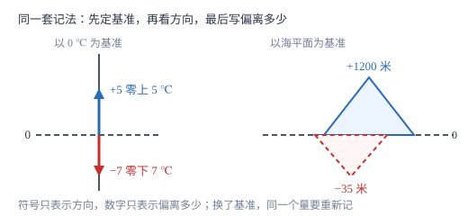

正数与负数
负数不是给数加了个装饰性的减号，而是为了把「方向相反的两个量」也记成数；0 是唯一的中立点，既不是正数也不是负数。
| 所属主题 | 有理数 |
|---|---|
| 所属模块 | 代数 |
| 课标学段 | 第四学段（7~9 年级） |
| 核心素养 | 抽象能力应用意识 |
教材定位
人民教育出版社《人教版（2024版）义务教育教科书·数学》
七年级上册第1章 有理数1.1 正数和负数
对应七上 1.1 正数和负数。教材用温度、收支两类情境引入；本篇把记法归纳为「基准—方向—多少」三个成分，并补上课本没有单列、考试却常失分的 -a 正负判断。
说明
大于 0 的数叫正数，在正数前面加上符号「-」所得的数叫负数。正数前面的「+」可以省略不写，所以 5 就是 +5。0 既不是正数也不是负数，它单独算一类，是正数与负数的分界。
之所以要造出负数，是因为小学的数只能记录「有多少」，记不下「朝哪个方向变」。零上 3 ℃ 与零下 3 ℃，多少一样、方向相反，只写 3 分不开这两种情形，写成 +3 与 -3 就分开了。这样成对出现的量叫具有相反意义的量，比如零上与零下、收入与支出、向东与向西、水位上升与下降。注意记法里的 0 是人为选定的：以 0 ℃ 为基准时零下 3 ℃ 记作 -3 ℃，若改以零下 10 ℃ 为基准，同一个温度就要记作 +7 ℃——基准一换，正负号跟着换。
使用场景
温度与海拔是最直接的两处。天气预报的 -7 ℃ 就是低于 0 ℃ 七度；海拔记作 -35 米，意思是低于海平面 35 米，基准都是海平面。财务上也常用：盈利为正、亏损为负，或者收入为正、支出为负。运动学里规定向东为正，向西就记作负数。
判定题给出「以什么为标准」这句话时，那句话就是在交代基准。做题先抄下基准，再决定哪一侧记正、哪一侧记负，最后才写数。若题目改了基准，所有数的符号都要重算，不能只改一个。
注意点
0 的身份要记准：它不是正数、不是负数，但它是整数，也是有理数。说「非负数」时包含 0，说「非正数」时也包含 0，所以 0 同时属于这两类。
符号「-」有两种身份，别混：写在数前面表示这个数是负数，此时它是性质符号；夹在两个数中间表示减法，此时它是运算符号；写在括号里表示取相反数，比如 -(-3)=3。正因为第二种身份，-a 未必是负数——只要 a 本身是负数，-a 就是正数。
证明

图 1：0 是基准，箭头方向表示偏离方向，箭头长度表示偏离多少——三样齐了，一个数才能把「相反意义的量」说清楚
证明
结论 1一个具有相反意义的量要记成数，必须同时给出基准、方向与多少三个成分，缺一个就会出现两种情形记成同一个数。
以温度为例：把冰水混合物的温度定为 0 ℃，高于它的记为正、低于它的记为负。零上 3 ℃ 是「基准之上 3 度」，零下 3 ℃ 是「基准之下 3 度」，两者的「多少」都是 3，仅方向不同；只写 3 会把它们混成一个，写成 +3 与 -3 才能分开。海拔以海平面为 0 米同理，+1200 米与 -35 米分别表示高于、低于海平面。
关键一步依据是记法必须能区分不同对象：0 交代基准在哪，符号交代偏离方向，绝对值交代偏离多少。三个成分齐备时，一个数对应一种情形，不会重复也不会遗漏。
结论 20 既不是正数也不是负数，因为它表示「正好在基准上」，不表示任何方向的偏离。
按定义分类，正数是高于基准的量，负数是低于基准的量，0 表示没有偏离。若把 0 算作正数，那么「非正数」这一类就漏掉了 0；若把 0 算作负数，那么「非负数」就漏掉了 0。而实际使用中，0 ℃ 不是「比 0 ℃ 高」也不是「比 0 ℃ 低」，它只能单独成类。
关键一步依据是分类要不重不漏：正数、0、负数三者互斥且穷尽，0 归入任何一侧都会破坏这个结构。
结论 3-a 的正负由 a 的正负决定，不能只看到符号就判它是负数。
取 a=-5，则 -a=-(-5)=5，是正数；取 a=0，则 -a=0；取 a=6，则 -a=-6，才是负数。三种取值给出三种结果，说明「-a 是负数」这个判断只在 a 为正数时成立。
关键一步依据是符号「-」在此处的身份是运算——对这个数取相反数，而不是给它贴一个「负」的标签。运算结果的符号由被运算的数决定，所以要先看 a 是什么数。
动手实验
拿一张方格纸，中间画一条水平线标上 0，把它当作温度计的 0 ℃。从 0 向上数 5 格写 +5，向下数 7 格写 -7。然后把这张纸整体上下平移，让原来的 -7 那一格对准新的 0 刻度，再读出原来 +5 的那一格变成多少——读数会从 +5 变成 +12。这一步动手做，就能看清「基准换了，正负号跟着换」不是口诀，而是刻度整体挪位的结果。
解题思路
第一步找基准。题目里「以……为标准」「比……多（少）」「收入（支出）」这些话就是在指定基准，先把它写在草稿纸最上面。第二步定方向。把一组相反意义中的一侧统一规定为正，那么另一侧自动为负；常见的约定是上升、收入、向东、增加为正。第三步写数。偏移量是多少就写多少，符号只负责表达方向，不参与大小。第四步回读。把写出的数翻译回一句中文，检查方向有没有写反、基准有没有搞错。
遇到「若改以……为正」这类追问，不要在原答案上加负号了事：仍按四步走一遍，基准和方向都重新定，再逐个数重写。改方向时所有数一起变号，改基准时每个数都要按新的 0 刻度重新读数，两者不是同一件事。
按场景的例题
例 1（场景：物理情境） 一天的气温与附近地形的高度
某地某日最高气温为零上 5 ℃，最低气温为零下 7 ℃；附近山峰高出海平面 1200 米，山谷最低处低于海平面 35 米。用正负数表示这四个量，并分别指出各自的基准。
解：气温以 0 ℃ 为基准，零上为正：最高气温记作 +5 ℃，最低气温记作 -7 ℃。高度以海平面为基准，海平面以上为正：山峰记作 +1200 米，山谷记作 -35 米。写的时候只把「偏离多少」写成数字，方向交给符号，所以 -35 米读作「低于海平面 35 米」，不是「负三十五米高」。
答：+5 ℃、-7 ℃（基准 0 ℃）；+1200 米、-35 米（基准海平面）。
例 2（场景：销售与利润） 季度经营的盈与亏
某商店 4 月盈利 2.4 万元，5 月亏损 0.8 万元，6 月收支相抵。以盈利为正，(1) 用正负数表示这三个月的经营情况；(2) 若改以亏损为正，5 月又该怎么记？
解：(1) 以盈利为正，则亏损为负：4 月记 +2.4 万元，5 月记 -0.8 万元，6 月收支相抵记 0 万元——0 表示没有盈亏，既不属盈也不属亏。(2) 改以亏损为正后，方向对调：5 月亏损 0.8 万元记作 +0.8 万元，而 4 月盈利反过来记作 -2.4 万元。可见符号本身不携带「好」与「坏」，它只表示方向。
答：(1) +2.4 万元、-0.8 万元、0 万元；(2) 5 月记作 +0.8 万元，4 月记作 -2.4 万元。
例 3（场景：行程与速度） 东西向跑道上三人的位置
一条东西向跑道，以向东为正。甲从起点向东走了 60 米，乙从起点向西走了 45 米，丙在起点休息。(1) 用正负数表示三人的位置；(2) 若改以向西为正，三人的位置又怎么记？
解：(1) 基准是起点，向东为正：甲在 +60 米处，乙在 -45 米处，丙就在基准上，记 0 米。(2) 把正向改成向西，三人相对起点的方向和距离都没变，变的是「哪一侧算正」：乙在西侧，现在记 +45 米；甲在东侧，现在记 -60 米；丙仍在基准上，还是 0 米。
答：(1) +60 米、-45 米、0 米；(2) -60 米、+45 米、0 米。
常用推论
若 a 是正数，则 -a 是负数；若 a 是负数，则 -a 是正数；若 a=0，则 -a=0。三者合起来说明：取相反数只翻转方向，不改变「偏离多少」。
非负数指正数与 0，非正数指负数与 0。因此「a 是非负数」与「a≥ 0」说的是同一件事，0 必须算进去。
只有同类量才能构成相反意义的量：温度与温度、收入与支出可以配对，温度与长度不能，因为它们没有共同的基准与单位。
易错点
错认为 0 是最小的正数。
为什么错把「没有」误当成「最小」。正数表示高于基准的量，0 恰恰表示没有偏离，它不在正数这一侧。
正确0 不是正数。而且正数没有最小值：任意正数除以 2 都得到更小的正数，例如 0.5 的一半是 0.25。
错看到 -a 就判它是负数。
为什么错把符号「-」当成「负」的标签，忽略了它在这里是「取相反数」的运算。
正确先看 a 是什么数：a=-3 时 -a=3 为正数，a=7 时 -a=-7 为负数，a=0 时 -a=0。
错把「向西走了 -5 米」当成向西走 5 米。
为什么错文字里的方向与符号表达的方向重复使用，等于把方向说了两遍，一正一负相互抵消。
正确规定向东为正后，向西 5 米直接记作 -5 米，句子写成「走了 -5 米」即可；文字方向与正负号只能保留一个。
直观理解
把 0 想成一条水平的地面线，正数是从地面往上垒的台阶，负数是从地面往下挖的坑。台阶高度和坑深度可以一样，但方向相反，所以一个记正、一个记负。温度计的 0 ℃ 刻度、海平面的 0 米、账本上的收支相抵，用的都是这条线。